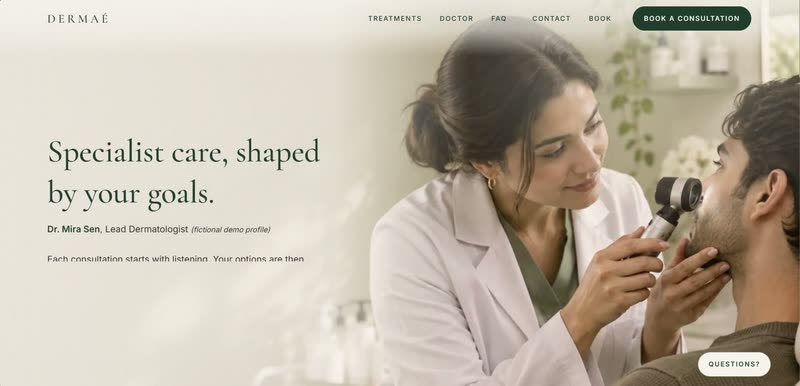
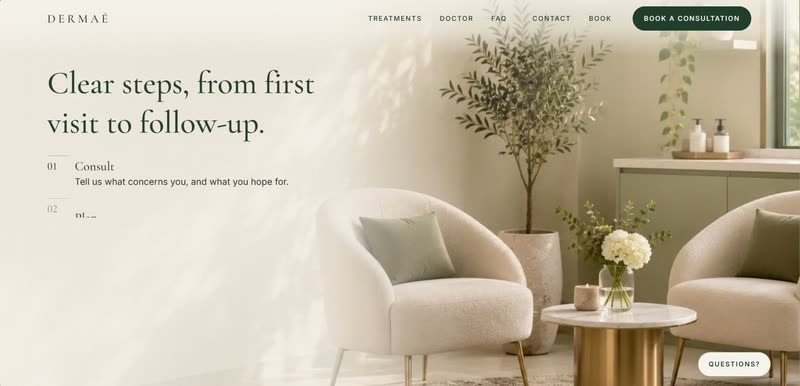

DERMAÉ
A concept website for a premium dermatology clinic.
The business and its problem
A premium dermatology clinic.
It needed to feel luxurious and trustworthy, so people feel safe booking.
My idea
A soft colour palette and a smooth scroll film that feels like a luxury advert.
Key decisions
- A quiet, premium voiceA fine serif wordmark on soft cream and sage, with plenty of space around every line: calm, not clinical.
- A scroll film like a luxury advertAs you scroll, the page moves like a slow, polished advert instead of a list of services.
- Booking is always one step away"Book a consultation" stays in the top bar, and the page ends on a short, friendly consultation request.
- Honest demo contentAs a concept, the doctor profile and credentials are clearly marked as fictional on the page itself.
Stills


